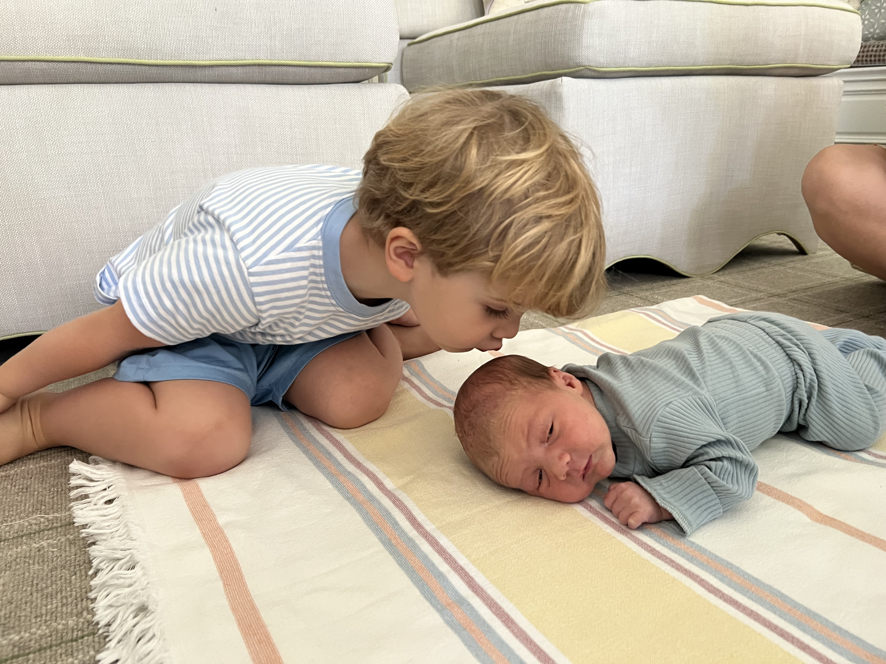

<!DOCTYPE HTML PUBLIC "-//W3C//DTD HTML 4.01 Transitional//EN">
<html lang="en"></html>
<html>
  <head>
<title>HOME</title>
 <link rel="stylesheet" type="text/css" href="styles.css">

    <meta http-equiv="content-type" content="text/html; charset=UTF-8">
    <title>HOME.html</title>

  </head>
    

<header>
    Home Site
</header>
    
<nav>
<ul>
    <li><a href= "index.html"> Home</a>
    <li><a href= "about.html"> About </a>
    <li><a href= "media.html"> Media </a>
    <li><a href= "Sports.html"> Sports</a></li>
    </ul>
</nav>

  <body>
      <h1>Hello, world!</h1>

<h2> This page is by Maggie Johnston, written about her nephew Riggs.</h2> <br>
    <br>
    <a href= "https://virginia.edu/"></a> <br>
    <ul>
      <li>This photo is of Riggs and Augie, my nephews! <br>
      </li>
      <li>Riggs is three years old, and he has an older sister and a
        younger brother. <br>
      </li>
      <li>Augie is two weeks old in this photo, but he is now six month
        old. <br>
      </li>
      <li>Riggs loves his baby brother, but he is still learning how to
        be gentle with him.<br>
          <li>Riggs loves to play sports and continues talking about how he cannot wait to teach Augie to play sports. See the pie chart below to see what Riggs favorite sports are.</li>
      </li>
    </ul><br>
      <br>

  </body>
</html>
